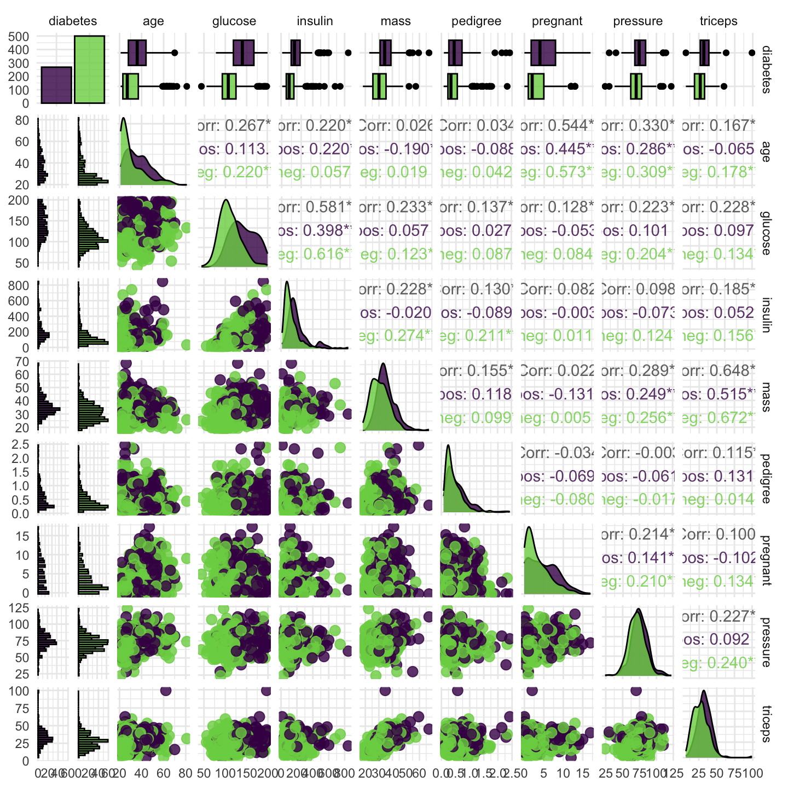
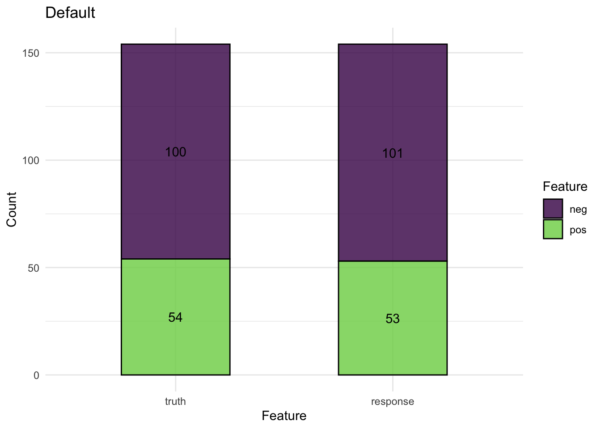
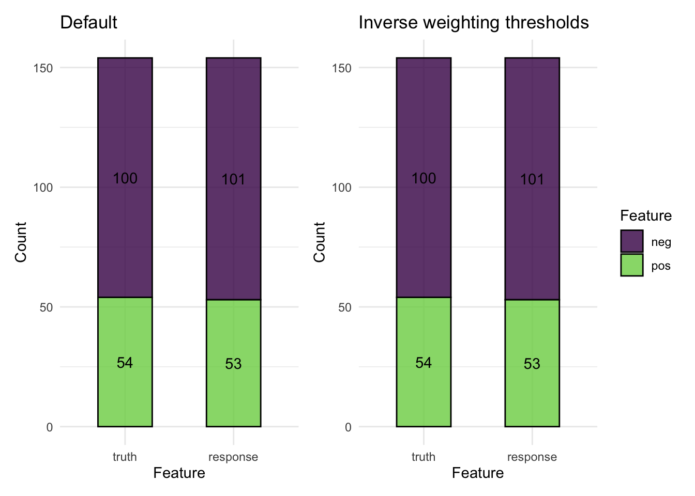
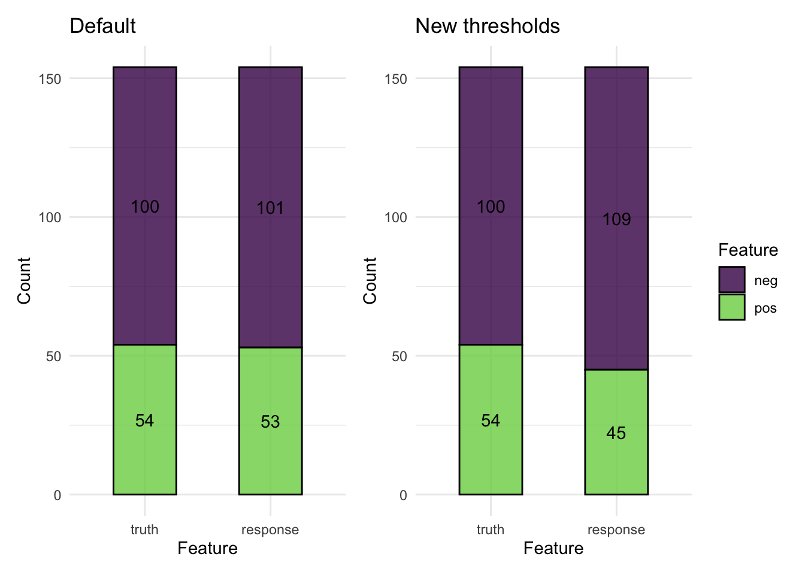

library(mlr3)
library(mlr3viz)
library(ggplot2)
library(patchwork)
library(data.table)
options(datatable.print.nrows = 20)Introduction
I am attempting to learn how to use {mlr3} (Lang et al. 2019), by reading through the book Applied Machine Learning Using mlr3 in R (Bischl et al. 2024).
Lang, Michel, Martin Binder, Jakob Richter, Patrick Schratz, Florian Pfisterer, Stefan Coors, Quay Au, Giuseppe Casalicchio, Lars Kotthoff, and Bernd Bischl. 2019. “mlr3: A Modern Object-Oriented Machine Learning Framework in R.” Journal of Open Source Software, December. https://doi.org/10.21105/joss.01903.
Bischl, Bernd, Raphael Sonabend, Lars Kotthoff, and Michel Lang, eds. 2024. Applied Machine Learning Using mlr3 in R. CRC Press. https://mlr3book.mlr-org.com.
Foss, Natalie, and Lars Kotthoff. 2024. “Data and Basic Modeling.” In Applied Machine Learning Using mlr3 in R, edited by Bernd Bischl, Raphael Sonabend, Lars Kotthoff, and Michel Lang. CRC Press. https://mlr3book.mlr-org.com/data_and_basic_modeling.html.
In this first blog post, I am going through the exercises given in Section 2 (Foss and Kotthoff 2024). This involves creating a classification tree model, on the PimaIndiansDiabetes2 (from the {mlbench} package), to predict whether a person has diabetes or not. No (proper) evaluation or validation is done here – that’ll be for a later post.
Prerequisites
Exercises
Question 1
Train a classification model with the "classif.rpart" learner on the Pima Indians Diabetes dataset. Do this without using tsk("pima"), and instead by constructing a task from the dataset in the mlbench package: data(PimaIndiansDiabetes2, package = "mlbench").
Missing data
Note: The dataset has NAs in its features. You can either rely on rpart’s capability to handle them internally (surrogate splits) or remove them from the initial data.frame using na.omit().
The rpart algorithm has a built-in method called surrogate splits, which allows it to handle missing values without removing data. If a feature value is missing at a particular split, rpart:
- Tries to use an alternative feature (a surrogate variable) that closely mimics the main splitting feature.
- If no good surrogate is found, it assigns the most common class (for classification) or the mean value (for regression) within that split.
- Make sure to define the
posoutcome as the positive class. - Train the model on a random 80% subset of the given data and evaluate its performance with the classification error measure on the remaining data.
Answer
Loading the data:
data(PimaIndiansDiabetes2, package = "mlbench")
pima <- as.data.table(PimaIndiansDiabetes2)
pima pregnant glucose pressure triceps insulin mass pedigree age diabetes
<num> <num> <num> <num> <num> <num> <num> <num> <fctr>
1: 6 148 72 35 NA 33.6 0.627 50 pos
2: 1 85 66 29 NA 26.6 0.351 31 neg
3: 8 183 64 NA NA 23.3 0.672 32 pos
4: 1 89 66 23 94 28.1 0.167 21 neg
5: 0 137 40 35 168 43.1 2.288 33 pos
---
764: 10 101 76 48 180 32.9 0.171 63 neg
765: 2 122 70 27 NA 36.8 0.340 27 neg
766: 5 121 72 23 112 26.2 0.245 30 neg
767: 1 126 60 NA NA 30.1 0.349 47 pos
768: 1 93 70 31 NA 30.4 0.315 23 negI want to predict whether each person has diabetes, using a CART (‘classification and regression tree’).
Creating a task
First, I create the task. I am defining pos to be the positive class in this step. It can also be done later by setting tsk_pima$positive = "pos".
tsk_pima <- as_task_classif(pima, target = "diabetes", positive = "pos")
tsk_pima<TaskClassif:pima> (768 x 9)
* Target: diabetes
* Properties: twoclass
* Features (8):
- dbl (8): age, glucose, insulin, mass, pedigree, pregnant, pressure,
triceps#autoplot(tsk_pima, type = "duo") +
#theme(strip.text.y = element_text(angle = -0, size = 8))
autoplot(tsk_pima, type = "pairs")

pima dataset. Note that it is unbalanced, as there are more negative diabetes outcomes than positive.
Let’s see how unbalanced the data is…
pima[, .N, by = "diabetes"] diabetes N
<fctr> <int>
1: pos 268
2: neg 500Splitting the data
Create a split of \(80\%\) training and \(20\%\) test data.
Important
I know this is bad practice. Most of the time (see below for caveats), all the data should be used to fit the model, and then internal validation done via resampling (e.g. using bootstrap or cross-validation).
From Frank Harrell’s blog,
data splitting is an unstable method for validating models or classifiers, especially when the number of subjects is less than about 20,000 (fewer if signal:noise ratio is high). This is because were you to split the data again, develop a new model on the training sample, and test it on the holdout sample, the results are likely to vary significantly. Data splitting requires a significantly larger sample size than resampling to work acceptably well
Also see Steyerberg (2018).
To chose whether to do internal or external validation, see the Biostatistics for Biomedical Research summary.
Steyerberg, Ewout W. 2018. “Validation in Prediction Research: The Waste by Data Splitting.” Journal of Clinical Epidemiology 103: 131–33.
set.seed(52)
splits <- partition(tsk_pima, ratio = 0.8)
splits$train
[1] 1 2 3 4 5 8 9 10 11 12 14 18 19 20 21 22 23 24
[19] 25 27 28 29 30 31 32 34 35 36 37 38 39 40 41 42 43 44
[37] 46 48 49 50 51 52 53 54 55 56 57 58 59 60 61 62 63 64
[55] 65 66 69 70 71 72 77 78 79 80 81 82 83 85 86 88 89 90
[73] 91 92 93 94 97 98 99 100 101 103 104 105 106 107 108 109 110 111
[91] 112 113 114 116 117 118 119 120 121 122 123 124 125 128 129 130 132 133
[109] 135 136 137 138 139 140 142 143 144 145 146 148 149 151 152 153 157 158
[127] 159 160 161 162 163 164 165 166 167 169 170 171 173 174 175 177 178 179
[145] 180 181 182 183 184 185 186 187 188 189 190 191 194 195 196 197 198 199
[163] 200 201 202 203 204 205 206 207 209 210 212 213 215 216 217 218 220 221
[181] 222 224 225 226 228 229 231 233 234 235 236 237 238 243 244 245 246 247
[199] 248 251 252 255 256 257 258 259 261 262 263 264 266 267 268 269 270 271
[217] 273 275 276 277 279 280 281 282 283 284 285 286 287 290 291 292 293 294
[235] 295 297 298 299 301 302 305 306 307 309 310 311 312 313 314 315 316 318
[253] 319 320 321 322 324 326 327 328 329 330 331 332 333 334 335 336 337 339
[271] 340 341 343 344 346 347 349 350 351 352 353 354 355 356 357 358 359 360
[289] 361 364 365 366 367 368 369 370 371 372 373 374 375 376 378 379 380 381
[307] 382 384 386 387 389 390 391 392 393 394 395 396 397 398 399 401 402 403
[325] 404 405 406 407 408 409 410 411 412 414 415 416 417 418 420 421 422 423
[343] 424 425 427 429 430 433 436 437 439 440 441 442 443 444 445 446 447 448
[361] 449 450 451 452 453 454 455 456 457 459 461 463 464 465 466 469 470 471
[379] 472 473 474 476 477 478 482 483 484 485 486 487 488 489 490 491 493 494
[397] 495 497 498 499 500 501 503 504 505 506 508 509 510 511 512 513 514 515
[415] 516 517 518 520 521 522 523 524 526 527 528 529 530 532 533 534 535 536
[433] 537 538 539 542 543 544 545 548 549 550 551 552 553 554 555 556 557 560
[451] 562 563 564 565 566 568 569 570 572 573 574 575 576 578 579 580 581 582
[469] 583 584 585 586 588 589 590 591 592 594 595 596 597 598 600 601 602 603
[487] 604 605 606 607 608 609 610 611 612 615 616 617 618 619 620 621 623 625
[505] 627 628 629 630 632 634 635 636 637 639 640 641 642 643 644 645 646 647
[523] 649 650 651 654 656 658 659 660 661 662 663 665 666 667 669 670 672 674
[541] 676 677 678 681 683 684 686 687 688 689 690 692 693 695 697 698 700 701
[559] 702 703 704 705 706 707 708 709 710 711 712 713 714 715 716 717 722 723
[577] 724 725 726 727 728 729 730 732 735 736 737 738 739 740 741 742 743 744
[595] 746 748 749 750 751 752 753 754 756 757 758 759 760 761 762 763 764 765
[613] 766 767
$test
[1] 6 7 13 15 16 17 26 33 45 47 67 68 73 74 75 76 84 87
[19] 95 96 102 115 126 127 131 134 141 147 150 154 155 156 168 172 176 192
[37] 193 208 211 214 219 223 227 230 232 239 240 241 242 249 250 253 254 260
[55] 265 272 274 278 288 289 296 300 303 304 308 317 323 325 338 342 345 348
[73] 362 363 377 383 385 388 400 413 419 426 428 431 432 434 435 438 458 460
[91] 462 467 468 475 479 480 481 492 496 502 507 519 525 531 540 541 546 547
[109] 558 559 561 567 571 577 587 593 599 613 614 622 624 626 631 633 638 648
[127] 652 653 655 657 664 668 671 673 675 679 680 682 685 691 694 696 699 718
[145] 719 720 721 731 733 734 745 747 755 768
$validation
integer(0)Training the model
Now, I will train the classification tree on the training data.
# loading the learners
lrn_featureless <- lrn("classif.featureless", predict_type = "prob")
lrn_rpart <- lrn("classif.rpart", predict_type = "prob") # 'prob' is the default prediction type
lrn_rpart<LearnerClassifRpart:classif.rpart>: Classification Tree
* Model: -
* Parameters: xval=0
* Packages: mlr3, rpart
* Predict Types: response, [prob]
* Feature Types: logical, integer, numeric, factor, ordered
* Properties: importance, missings, multiclass, selected_features,
twoclass, weights# training the learners
lrn_featureless$train(tsk_pima, splits$train)
lrn_rpart$train(tsk_pima, splits$train)
lrn_rpart<LearnerClassifRpart:classif.rpart>: Classification Tree
* Model: rpart
* Parameters: xval=0
* Packages: mlr3, rpart
* Predict Types: response, [prob]
* Feature Types: logical, integer, numeric, factor, ordered
* Properties: importance, missings, multiclass, selected_features,
twoclass, weightsEvaluating the model
Here, I’m evaluating the model on the test data (and comparing against the featureless learner).
I will consider the Brier, log-loss and accuracy measures. The Brier score lies between \([0,
1]\), where \(0\) is best. The log-loss is the negative logarithm of the predicted probability for the true class, and the accuracy is the number of correct predictions divided by total number of predictions.
# load accuracy measures
measures = msrs(c("classif.mbrier", "classif.logloss", "classif.acc"))
# predicting using the featureless learner
prediction_featureless <- lrn_featureless$predict(tsk_pima, splits$test)
prediction_featureless <PredictionClassif> for 154 observations:
row_ids truth response prob.pos prob.neg
6 neg neg 0.3485342 0.6514658
7 pos neg 0.3485342 0.6514658
13 neg neg 0.3485342 0.6514658
--- --- --- --- ---
747 pos neg 0.3485342 0.6514658
755 pos neg 0.3485342 0.6514658
768 neg neg 0.3485342 0.6514658# obtaining score of featureless learner
prediction_featureless$score(measures) classif.mbrier classif.logloss classif.acc
0.4553977 0.6478575 0.6493506 # predicting using the classification tree
prediction_rpart <- lrn_rpart$predict(tsk_pima, splits$test)
prediction_rpart <PredictionClassif> for 154 observations:
row_ids truth response prob.pos prob.neg
6 neg neg 0.00000000 1.0000000
7 pos neg 0.08675799 0.9132420
13 neg neg 0.24390244 0.7560976
--- --- --- --- ---
747 pos pos 0.77777778 0.2222222
755 pos pos 0.76744186 0.2325581
768 neg neg 0.08675799 0.9132420# obtaining score of the classification tree
prediction_rpart$score(measures) classif.mbrier classif.logloss classif.acc
0.2763229 0.8516860 0.8246753 # confusion matrix
prediction_rpart$confusion- 1
- All off-diagonal entries are incorrectly classified observations, and all diagonal entries are correctly classified.
truth
response pos neg
pos 40 13
neg 14 87prediction_plot <- autoplot(prediction_rpart) + ggtitle("Default")
prediction_plot
Question 2
Calculate the true positive, false positive, true negative, and false negative rates of the predictions made by the model in Exercise 1.
- Try to solve this in two ways:
- Using
mlr3measures-predefined measure objects. - Without using
mlr3tools by directly working on the ground truth and prediction vectors.
- Using
- Compare the results.
Answer
I’ve already started this in Question 1 (Section 2.1.1.4), but I will reiterate here. The confusion matrix gives the number of predictions that are correct (true positives or negatives) on the diagonal, and those that are incorrect (false positives and negatives) on the top right and bottom left, respectively
# confusion matrix
conf_matrix <- prediction_rpart$confusion
conf_matrix truth
response pos neg
pos 40 13
neg 14 87I want to obtain the rates, both using the mlr3measures objects, and without.
- Sensitivity
- (true positive rate) is the probability of a positive test result, conditioned on the individual truly being positive.
- Specificity
- (true negative rate) is the probability of a negative test result, conditioned on the individual truly being negative.
Using mlr3measures
First, let’s figure out the measures we need…
as.data.table(mlr_measures)[task_type == "classif" & predict_type == "response"]Key: <key>
key label task_type
<char> <char> <char>
1: classif.acc Classification Accuracy classif
2: classif.bacc Balanced Accuracy classif
3: classif.ce Classification Error classif
4: classif.costs Cost-sensitive Classification classif
5: classif.dor Diagnostic Odds Ratio classif
---
19: classif.specificity Specificity classif
20: classif.tn True Negatives classif
21: classif.tnr True Negative Rate classif
22: classif.tp True Positives classif
23: classif.tpr True Positive Rate classif
packages predict_type properties task_properties
<list> <char> <list> <list>
1: mlr3,mlr3measures response
2: mlr3,mlr3measures response
3: mlr3,mlr3measures response
4: mlr3 response
5: mlr3,mlr3measures response twoclass
---
19: mlr3,mlr3measures response twoclass
20: mlr3,mlr3measures response twoclass
21: mlr3,mlr3measures response twoclass
22: mlr3,mlr3measures response twoclass
23: mlr3,mlr3measures response twoclassOK, so we need to use the measures classif.tpr classif.fpr classif.tnr and classif.fnr, for the true positive, false positive, true negative and false negative rates, respectively.
measures <- msrs(c("classif.tpr", "classif.fpr", "classif.tnr", "classif.fnr"))
prediction_rpart$score(measures)classif.tpr classif.fpr classif.tnr classif.fnr
0.7407407 0.1300000 0.8700000 0.2592593 Without using mlr3measures
I can obtain these rates directly from the confusion matrix.
str(conf_matrix) 'table' int [1:2, 1:2] 40 14 13 87
- attr(*, "dimnames")=List of 2
..$ response: chr [1:2] "pos" "neg"
..$ truth : chr [1:2] "pos" "neg"# true positive rate / sensitivity
tpr <- conf_matrix[1, 1]/ sum(conf_matrix[, 1])
# false positive rate
fpr <- conf_matrix[1, 2]/ sum(conf_matrix[, 2])
# true negative rate / specificity
tnr <- conf_matrix[2, 2]/ sum(conf_matrix[, 2])
# false negative rate
fnr <- conf_matrix[2, 1]/ sum(conf_matrix[, 1])
data.table(
classif.tpr = tpr,
classif.fpr = fpr,
classif.tnr = tnr,
classif.fnr = fnr
) classif.tpr classif.fpr classif.tnr classif.fnr
<num> <num> <num> <num>
1: 0.7407407 0.13 0.87 0.2592593Question 3
Change the threshold of the model from Question 1 such that the false positive rate is lower than the false negative rate.
- What is one reason you might do this in practice?
Answer
One reason I might want a lower false positive rate than false negative rate is it the damage done by a false positive is higher than that done by a false negative. That if, if classifying the outcome as positive when it is actually negative is more damaging than the other way round. For example, if I am building a model to predict fraud for a bank, and a false positive would result in a customer transaction being wrongly declined. Lots of false positives could result in annoyed customers and a loss of trust.
Inverse weights
Let’s first change the thresholds such that they account for the inbalanced data. I’m not considering false positives here.
From Figure 1, it’s clear that the data is unbalanced (more people with negative diabetes than positive). I can account for this by changing the thresholds using inverse weightings.
First, let’s use the training data to obtain new thresholds.
new_thresh = proportions(table(tsk_pima$truth(splits$train)))
new_thresh
pos neg
0.3485342 0.6514658 And then I’ll use these thresholds to reweight the model.
prediction_rpart$set_threshold(new_thresh)
prediction_rpart$confusion truth
response pos neg
pos 40 13
neg 14 87prediction_plot_newt <- autoplot(prediction_rpart) +
ggtitle("Inverse weighting thresholds")
prediction_plot + prediction_plot_newt +
plot_layout(guides = "collect")
Oh, it doesn’t make a difference!
Reducing false positive rate
This can be achieved by making it more difficult for the model to predict a positive result.
So, let’s create thresholds where the pos result is penalised.
new_thresh <- c("pos" = 0.7, "neg" = 0.3)prediction_rpart$set_threshold(new_thresh)
prediction_rpart$confusion truth
response pos neg
pos 35 10
neg 19 90measures <- msrs(c("classif.tpr", "classif.fpr", "classif.tnr", "classif.fnr"))
prediction_rpart$score(measures)classif.tpr classif.fpr classif.tnr classif.fnr
0.6481481 0.1000000 0.9000000 0.3518519 prediction_plot_newt <- autoplot(prediction_rpart) +
ggtitle("New thresholds")
prediction_plot + prediction_plot_newt +
plot_layout(guides = "collect")
Here, the false positive rate has decreased, but the false negative has increased (as expected).
Fin
Citation
BibTeX citation:
@online{smith2025,
author = {Smith, Paul and Smith, Paul},
title = {Getting {Started} with \{Mlr3\}},
date = {2025-03-03},
url = {https://pws3141.github.io/blog/posts/05-mlr3_basic_modelling/},
langid = {en}
}
For attribution, please cite this work as:
Smith, Paul, and Paul Smith. 2025. “Getting Started with
{Mlr3}.” March 3, 2025. https://pws3141.github.io/blog/posts/05-mlr3_basic_modelling/.